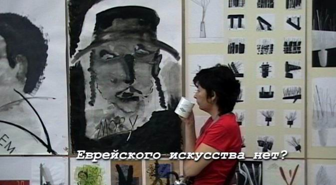
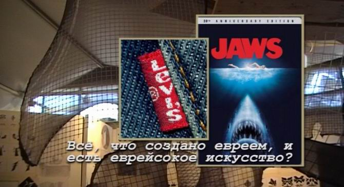
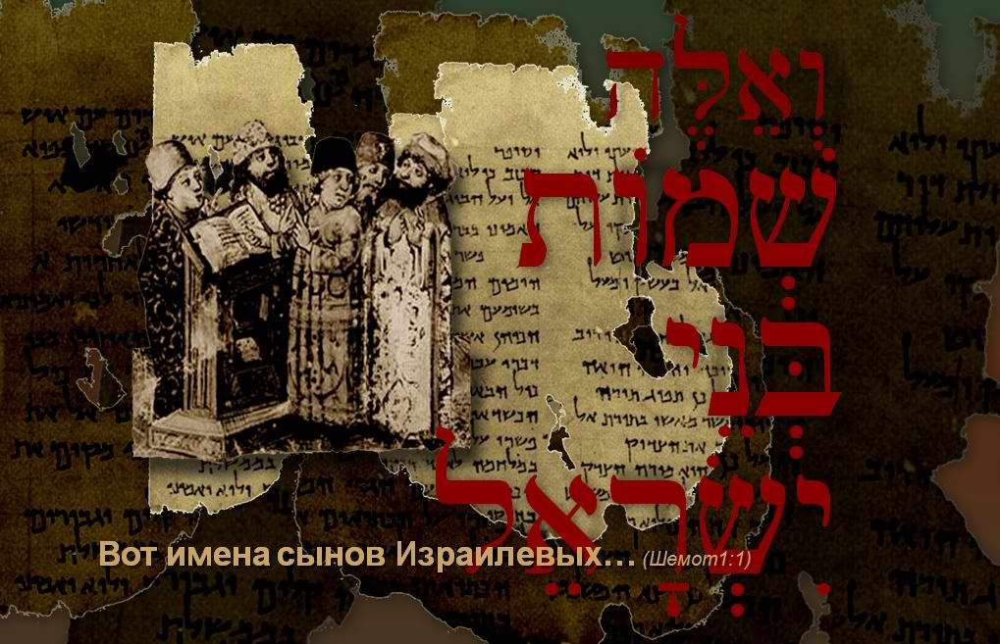
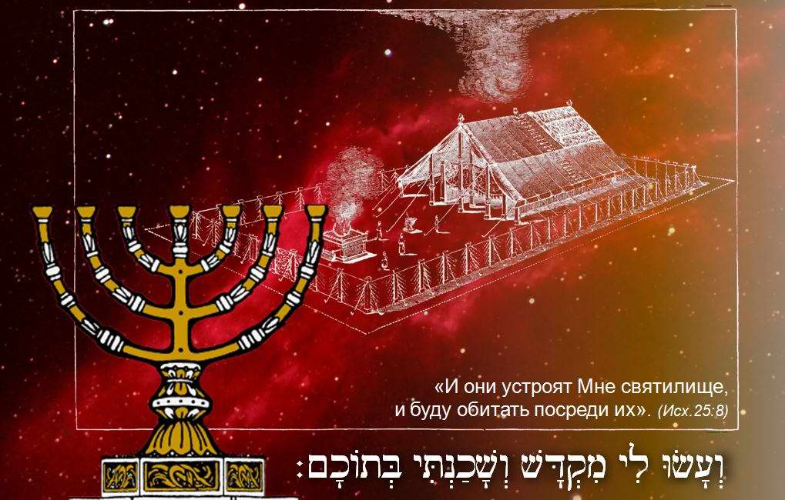
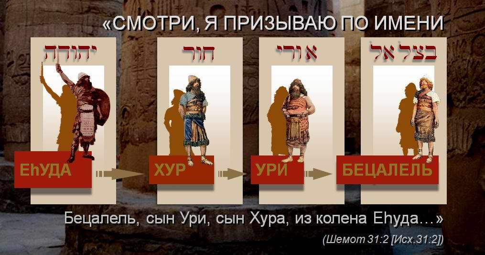
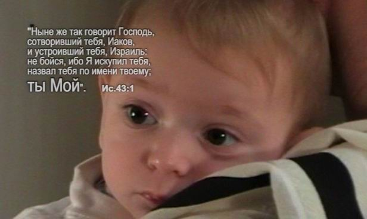
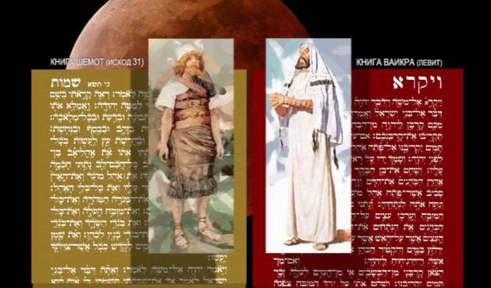

Арт-мидраш · Библия и художник
БЕЦАЛЕЛЬ / Веселеил /. Призвание

Наш разговор о первом художнике - израильтянине, которого избрал Бог, дабы тот устроил Ему Святилище в пустыне. В расшифровке полного имени художника мы можем открыть для себя точку зрения Библии на творчество человека.
"Бецалель - Сын Света" является уникальным проектом "Тора-Арт". Фильм представляет собой своего рода мидраш. Автор фильма большое значение придает искусству, как инструменту и способу комментировать Еврейские Священные Писания ТАНАХ.
БЕЦАЛЕЛЬ. Призвание. (часть I)
БЕЦАЛЕЛЬ. Под покровом Всевышнего. (часть II) БЕЦАЛЕЛЬ. Свет Господень (часть III) БЕЦАЛЕЛЬ. Дед ХУР (часть IV) БЕЦАЛЕЛЬ. Славящий Бога (часть V)
ФИЛЬМ: Эфраима Калиша "студия Тора-Арт"
МУЗЫКА: Даниэля Круглова
Год выпуска: 2009
Страна: Израиль
Жанр: арт-мидраш
Продолжительность: 00:54:24
Описание:
Фильм целиком посвящен исследованию имени первого художника израильтянина, призванного Всевышним в пустыне Синайской по исходе сынов Израиля из Египта. Этот самый художник - Бецалель (синод.: Веселеил) получил от Творца вселенной уникальный во всей истории человечества заказ на создание святилища Богу Всевышнему.
Все четыре имени, составляющие родословие художника (его собственное, имя отца, имя деда и имя колена), представляют собой зашиврованное послание современному художнику и в первую очередь художнику израильтянину, желающему исполнить свое призвание.
Это послание открывается пред нами по мере того, как мы углубляемся в суть каждого имени, исходя из древнееврейского текстового оригинала. Глубина ивритских слов, их родственные связи и взаимные влияния предстают пред нами без искажений и потерь, как это неминуемо случается в переводных текстах.
- Бецалель (бе-цель-эль) с древне еврейского языка - "под покровительством Бога".
- Имя Урия - (отец художника) в переводе означает - "Свет Господень".
- Имя Хур (дед - родоначальник династии ремесленников) означает - "очищенный, белый".
- Бецалель от колена Иеhуда (синод.: Иуда). Иеhуда, чье имя означает - "несущий славу Всевышнего".
Каждое имя в фильме сопровождается музыкальным сюжетом, без слов интерпретирующим и раскрывающим его значение.
***
Исследователи до сих пор дискутируют о том, существует ли такое явление, как еврейское искусство. И если да, то как его можно охарактеризовать. Назову лишь две распространенные точки зрения на этот счет.
Первая — еврейского искусства нет и быть не может, потому что народ, как считают специалисты, это общность людей, объединенных территорией, экономикой, культурой, языком и так далее, то есть, всё то, чего евреи были лишены на протяжении двух тысяч лет. А 60 лет существования государства Израиль — это ничтожно малое время для того, чтобы говорить о формировании культуры, искусства, присущего народу. Так что, нет народа - нет и проблем.

Другая точка зрения состоит в том, что всё, созданное художником-евреем и есть еврейское искусство. И если это так, то джинсы от Левис Штраус (LEVIS), фильм "Челюсти" от Спилберга являются типичными образцами еврейского искусства двадцатого века.

Итак, правомерно ли такое понятие как «еврейское искусство»? Безусловно. И более того, у него есть имя, данное ему Творцом, Богом Авраама, Исаака и Иакова. А иметь имя от Господа — это большое дело. Что же говорит по этому вопросу самый авторитетный в еврейской традиции источник — Тора (Библия)?
В книге Бэмидбар (в синодальном переводе книга Числа) звучит так: «Вот, народ живет отдельно и между народами не числится» (Числ.23:9). То есть, Израиль — это народ не от мира сего, значит, и его искусство тоже не принадлежит этому миру. Можно сказать, что это искусство имеет своим источником Небо и к Небу обращено. Сам Творец назвал его именем Бецалель בצלאל — так оно звучит на древнееврейском языке. В Синодальном переводе — Веселеил.
Именно его Тора называет патриархом еврейского искусства. Что нам известно о Бецалеле?
Он родился в еврейской семье, в Египте, примерно 3,5 тысячи лет назад. Но не смотря на давность лет, он и сегодня хорошо известен в Израиле. Его имя носит академия искусств и улица в Иерусалиме. Этому имени и посвящен сегодняшний арт-мидраш.
Чем же знаменит Бецалель? Кем он был? Почему еврейская традиция говорит, что от начала Предвечный Бог записал в Своей книге его имя вместе с именами царей и пророков Израиля?
Вот имена сынов Израилевых — по-евр.: Веэле шмот бней исраэль. Так начинается вторая книга Торы, известной под названием Исход. В еврейской традиции — Шемот, что означает Имена. В этом особый смысл и намек на важность имен, перечисленных в книге, на важность посланий, заключенных в этих именах.

«Смотри, Я назвал по имени Бецалеля, сына Ури, сына Хура,из колена Еhуда...» (Исх. 31:2).
Бог называет Бецалеля по имени, призывая его создать мишкан — святилище Бога Всевышнего, то, что в Синодальном переводе называется Скинией. Этот мишкан или скиния видом своим должен являть славу Предвечную на земле — Божье присутствие — шекину, как сказано: «И устроят Мне святилище, и буду обитать среди них» (Исх.25:8).

Святилище как отражение храма Всевышнего на небесах, устроенное Бецалелем, было произведением высочайшего искусства. Ведь Бог лично наполнил художника Своим духом и дал ему мудрость, ведение и разумение во всяком искусстве. То есть, сам Всемогущий был источником его способностей и вдохновения. Этот проект не имел себе равных во всей истории человечества по той причине, что заказчиком его выступал сам Творец вселенной.
Итак, Бог обращаясь к Моше и всему Израилю, говорит: «Смотри, Я назвал по имени Бецалеля, сына Ури, сына Хура, из колена Еhуда». И это не просто одно из многочисленных родословий, которыми изобилует Тора. В нем заключено нечто важное, особенное для тебя.
Полное родословие Бецалеля мы находим на страницах Писания четыре раза. Четыре раза полное родословие художника: «Бецалель, сын Ури, сын Хура, из колена Еhуда». Почему же Создатель придает именам столь важное значение? Потому что от начала Бог творил таким образом, давая имя всему. Назвать по имени — значит сотворить.

«В начале сотворил Бог...» (Быт. 1) - так начинается Тора.
«Он сказал, - и сделалось; Он повелел, - и явилось» (Пс.32:9).
«Ныне же так говорит Господь, сотворивший тебя, Иаков, и устроивший тебя, Израиль: не бойся, ибо Я искупил тебя, назвал тебя по имени твоему; ты Мой» (Ис. 43:1).
То есть, Я тот, кто произнес о тебе слово, и таким образом устроил тебя. Я дал тебе твое имя Исраэль и этим сотворил тебя. Я назвал тебя по имени и тем явил над тобой Свою власть. Поэтому ты Мой.

Для художника, для любого творческого человека очень важно постичь глубину слов пророка Ишайяhу (Исайи) и понять принцип Всевышнего. Он творит, произнося слово и давая всему имя. Так и Давид сказал: «Словом Господа сотворены небеса, и духом уст Его — всё воинство их» (Пс. 32:6).
Это и есть кухня — творческий процесс предвечный, где имя является определением, неким законом того, что оно называет и что созидает. Из всего, что творит Бог, Он дает уставы, законы, границы.

Когда Всевышний давал Моше устав и закон для служения священнодействия в Великом Храме, параллельно с ним Он дал закон творчества для художников-израильтян. Этот закон заключен в имени Бецалеля, и каждое слово, и даже буква в этом имени — практическое руководство к действию. Этим именем Творец называет не только человека, но и всё еврейское искусство, таким образом, сотворяя его и определяя для него закон. Для художников этот закон, назовем его законом Бецалеля, так же важен, как для левитов закон о храмовом служении, очищении, приношении жертв. Этот закон расшифрован и истолкован в имени Бецалеля, в его родословии. Рассматривая слово за словом в этом ряду имен, их суть и значение, мы получим ключ к откровению, что есть еврейское искусство и понимание качеств художника, каким его видит Творец.
БЕЦАЛЕЛЬ - СЫН СВЕТА. Призвание. (часть I) БЕЦАЛЕЛЬ - СЫН СВЕТА. Под покровом Всевышнего. (часть II) БЕЦАЛЕЛЬ - СЫН СВЕТА. Свет Господень (часть III) БЕЦАЛЕЛЬ - СЫН СВЕТА. Дед ХУР (часть IV) БЕЦАЛЕЛЬ - СЫН СВЕТА. Славящий Бога (часть V) Эта статья исправлена и дополнена автором. (впервые статья Эфраима Калиша была опубликована на сайте skiniyadavidova.org) автор: Эфраим Калиш /TORAART/
ЕСЛИ ЭТОТ МАТЕРИАЛ БЫЛ ВАМ ПОЛЕЗЕН, ПОЖАЛУЙСТА, ПОДЕЛИТЕСЬ ИМ С ДРУЗЬЯМИ